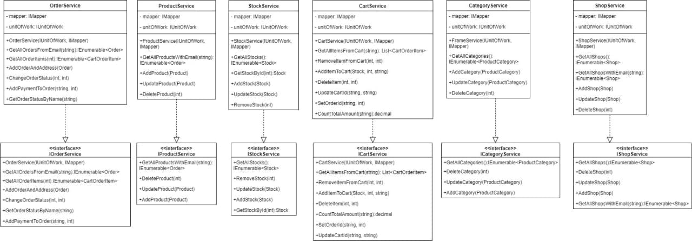

1.1 Тема: ДЕЛЕГАТИ. ПОДІЇ. АНОНІМНІ МЕТОДИ. ЛЯМБДА-ОПЕРАТОРИ. ЛЯМБДА-ВИРАЗИ.
1.2 Мета: придбати практичні навички роботи створення та використання делегатів, анонімних методи, лямбда-операторів, лямбда-виразів.
1.3 Постановка задачі:
До програмного коду попередніх лабораторних робіт додати та описати:
- класи-делегати (мінімум три делегата);
- події;
- анонімні методи;
- лямбда–оператори;
- лямбда–вирази;
- протестувати програму. Зробити висновки.
1.4 Використання
Делегати використовуються в просторі імен Veginder: FirstDelegate, SecondDelegate, ThirdDelegate, EventDelegate
Класи, в яких працювали: Test, Program
Середовище розробки: Visual Studio
Частина 1 - з абстрактним класом та віртуальним методом

Частина 2 - з інтерфейсами

Проект розміщенно на GitHub
Посилання
Висновки
У ході виконанная даної лабораторної роботи навчились створенню та використанню делегатів, анонімних методи, лямбда-операторів, лямбда-виразів.
Доповнили програмну реалізацію класів делегатами, анонімними методами, лямбда-ператорами та лямбда-виразами.